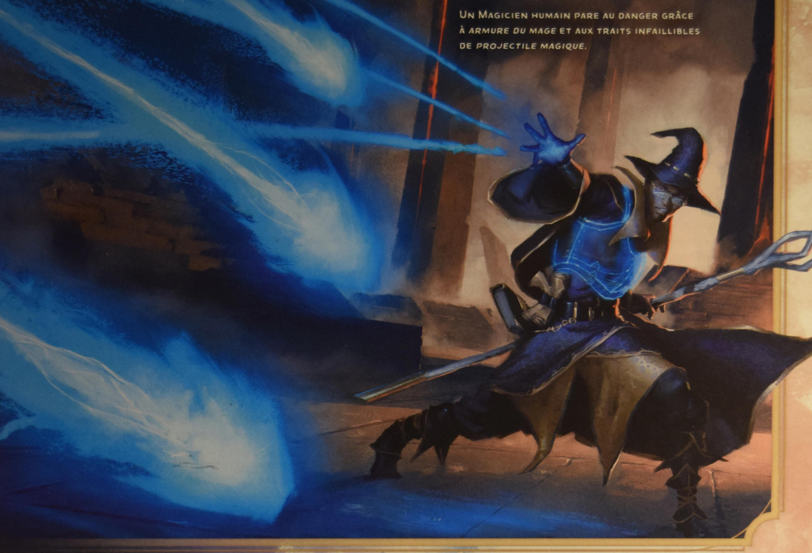

Vous touchez une créature consentante qui ne porte pas d'armure. Jusqu'à la fin du sort, sa CA de base est de 13 plus son modificateur de Dextérité. Le sort prend fin prématurément si la cible enfile une armure.
Bibliothèque de sorts · D&D 2024
Armure du mage
Abjuration du 1er niveau (Ensorceleur, Magicien)
